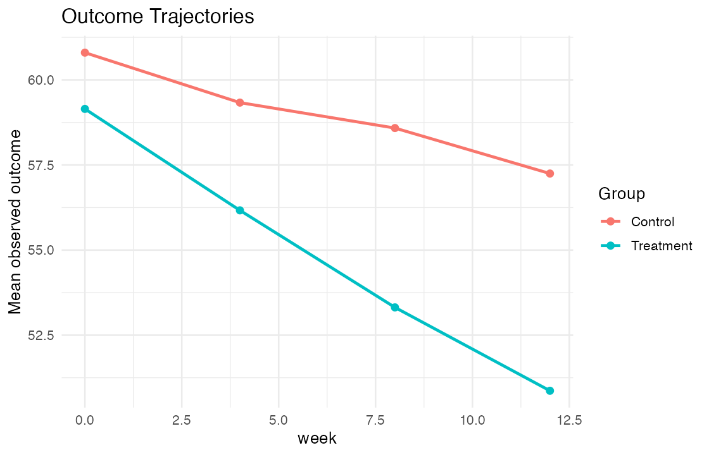

Question: How does treatment change outcomes over 12 weeks under incomplete follow-up?
A reproducible synthetic cohort of 500 participants was analyzed with week-12 baseline-adjusted ANCOVA and a subject-specific random-intercept mixed model. Missingness depends on observed outcome and treatment, representing a MAR sensitivity scenario.
| Method | Estimate | 95% CI |
|---|---|---|
| Week-12 ANCOVA | -6.25 | -7.78 to -4.72 |
| Mixed model (week-12 contrast) | -6.05 | -7.57 to -4.54 |

Negative estimates favor treatment. The mixed model uses all observed repeated measures and directly reports the treatment contrast at week 12.
Run Rscript run_all.R. Simulated data, model output, figure, and validation checks are regenerated from a fixed seed.